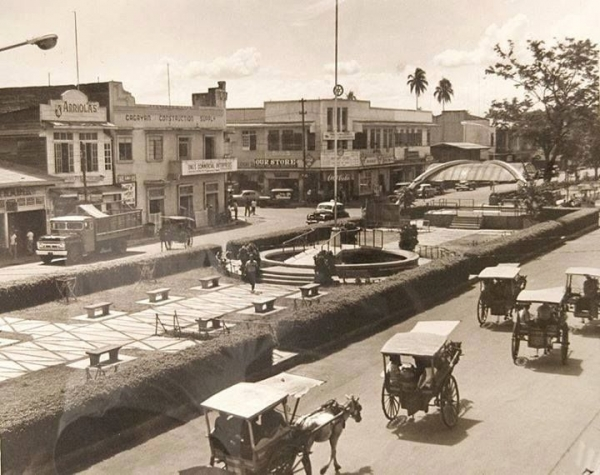
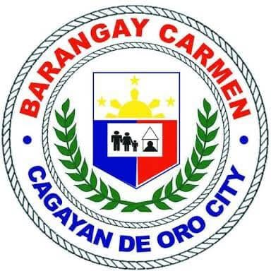

Barangay Carmen
ABOUT
Cagayan de Oro City, known as the City of Golden Friendship, is located in Northern Mindanao (Region X) along the shores of Macajalar Bay in the province of Misamis Oriental. One of the oldest settlements in Northern Mindanao, it has a rich history that dates back to the pre-colonial era and later developed into an important center for trade, culture, and governance during the Spanish period. Officially chartered as a city on June 15, 1950, Cagayan de Oro has grown into a thriving hub for commerce, education, tourism, and adventure, while remaining known for the warmth and hospitality of its people.

Old History
Cagayan de Oro's history dates back to around 350 AD, as evidenced by archaeological discoveries in Huluga, which reveal an early settlement engaged in trade with neighboring Asian cultures. During the Spanish period, the city became an important religious, political, and military center, later playing significant roles in the Philippine Revolution, American occupation, Japanese occupation, and its eventual transformation into a chartered city in 1950. Today, Cagayan de Oro is recognized as the leading center of commerce, education, and government in Northern Mindanao while preserving its rich cultural and historical heritage.

New History
The new Barangay Hall of Barangay Carmen is a modern government facility designed to provide efficient and accessible public services to the community. It features functional spaces for administrative offices, public transactions, and community meetings, creating a comfortable and organized environment for both residents and staff. The building reflects the barangay's commitment to effective governance, community development, and improved public service.

Ang KASAYSAYAN ng Barangay CARMEN
Here's a three-sentence summary: Barangay Carmen was originally a dense forest called **Looban** and became settled in the early 1900s when families from Talisay, Batangas were invited to clear and cultivate the land owned by the Kiamzon family. The barangay was named after the miraculous discovery of the image of **Nuestra Señora del Carmen**, who became its patron saint and inspired the community's annual celebration. Today, Barangay Carmen is a developed community in Silang, Cavite, with modern infrastructure and strategic access through the CALAX expressway, while remaining rich in history and tradition.

Directions
Barangay Carmen is located in Cagayan de Oro City, Misamis Oriental.
Visit us at the Barangay Carmen Hall for inquiries, services, and community concerns.